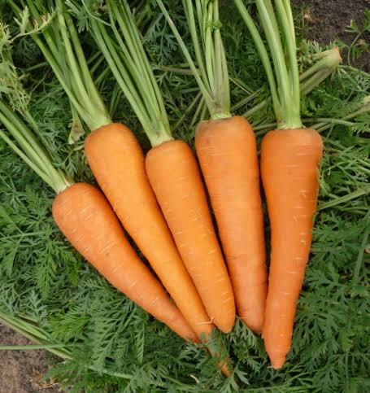

📖 Descrição
A Cenoura Baia (Daucus carota) é uma hortaliça de raiz muito apreciada pelo sabor adocicado e pelo elevado valor nutricional. É rica em betacaroteno, fibras, vitaminas e minerais, sendo bastante utilizada na alimentação saudável.
🌱 Cuidados
- Prefere solo leve, profundo e bem drenado.
- Necessita de boa luminosidade e sol pleno.
- Manter irrigação frequente, sem encharcar.
- Realizar adubação orgânica antes do plantio.
- Evitar pedras no solo para favorecer raízes bem desenvolvidas.
🌎 Origem
Originária da região da Ásia Central, sendo cultivada há milhares de anos em diversas partes do mundo.
🐝 Atrai quais polinizadores?
Quando floresce, atrai principalmente abelhas, borboletas e outros insetos polinizadores importantes para o equilíbrio ambiental.
🍽️ Parte comestível
Raiz.
💚 Benefícios para a saúde
- Rica em vitamina A (betacaroteno).
- Auxilia na saúde da visão.
- Fortalece o sistema imunológico.
- Contribui para a saúde da pele.
- É fonte de fibras e antioxidantes.
🌼 Curiosidade
A cor alaranjada da cenoura é resultado da grande quantidade de betacaroteno, pigmento que o organismo transforma em vitamina A.
🌍 Importância para o meio ambiente
Seu cultivo favorece a biodiversidade, melhora a qualidade do solo e contribui para práticas agrícolas sustentáveis na horta escolar.
🌾 Época de plantio
Pode ser cultivada durante todo o ano em regiões de clima ameno, apresentando melhor desenvolvimento no outono e inverno.
📱 Acesse esta página pelo QR Code

Escaneie o QR Code para acessar esta página pelo celular.